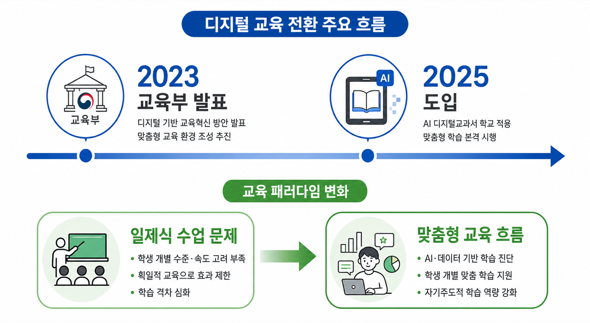
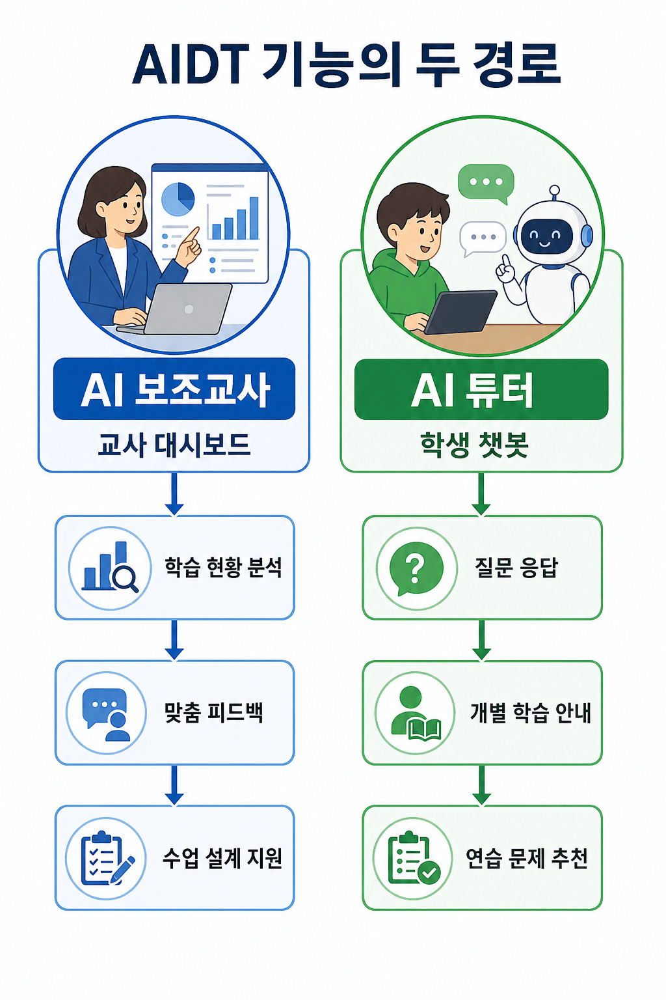
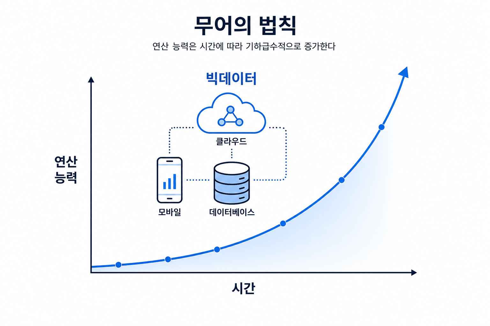
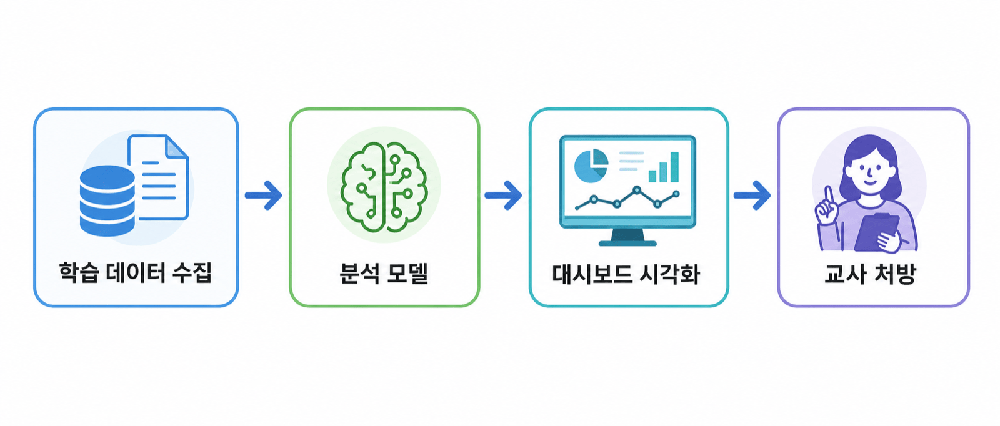
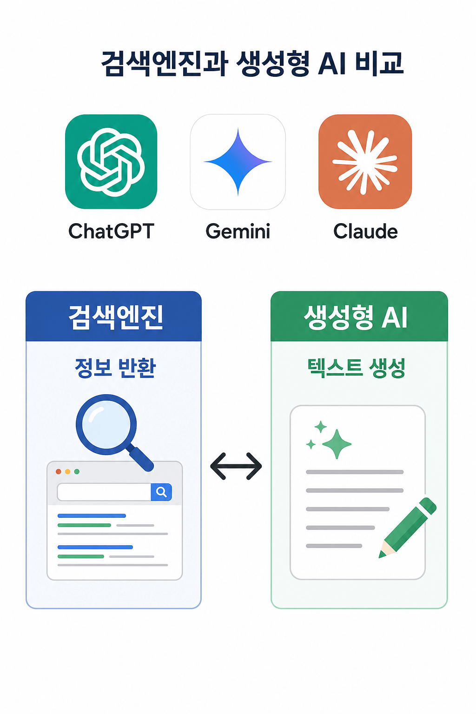
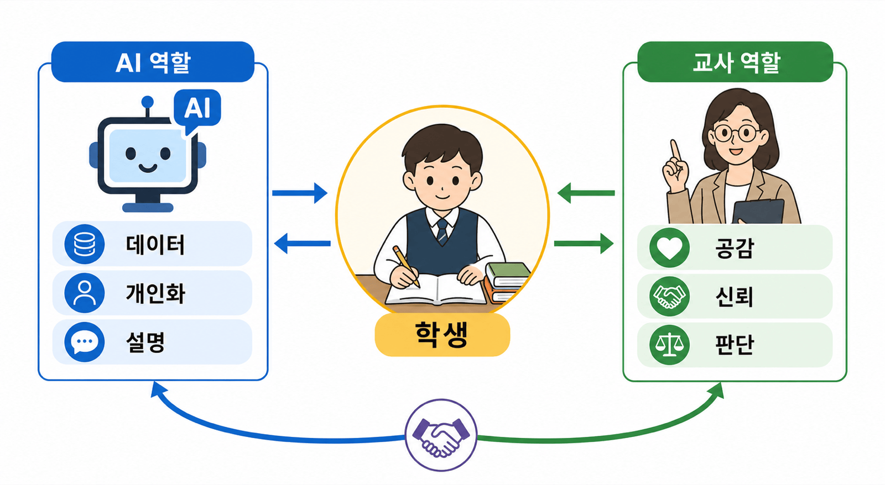

안내 질문: AI 디지털교과서(AIDT)가 기존 전자교과서와 근본적으로 다른 이유는 무엇인가?


안내 질문: 무어의 법칙과 빅데이터 시대의 도래가 교육에 어떤 새로운 가능성을 열었는가?

| 데이터 유형 | 예시 |
|---|---|
| 행동 데이터 | LMS 로그인·자료 접근 횟수·제출 이력 |
| 성취 데이터 | 시험 점수·과제 성적 |
| 미시적 데이터 | 문항 정답률·응답 시간·재시도 횟수 |
안내 질문: 학습분석학(LA)과 교육적 데이터 마이닝(EDM)은 어떤 점에서 구별되는가?
| 분석 유형 | 의미 | 예시 |
|---|---|---|
| 기술적 분석 | 현재 수준 파악 | "이 학생의 정답률은?" |
| 예측적 분석 | 미래 결과 예측 | "이대로라면 어떻게 될까?" |
| 처방적 분석 | 교육적 개입 제안 | "지금 어떤 지원이 필요한가?" |
학습 데이터 수집 → 분석 모델 처리 → 대시보드 시각화 → 교사 처방

| 구분 | 내용 |
|---|---|
| 기대 효과 | 학습 격차 조기 발견 · 선제적 개입 · 개인 맞춤형 지원 |
| 핵심 한계 | 모델 정확도 · 출판사별 성능 차이 · 오판이 학생에게 미치는 영향 |
| 전제 조건 | 투명한 원리 공개 · 독립적 성능 검증 · 교사 전문 판단 우선 보장 |
안내 질문: AI 튜터가 제공하는 교육적 기회와 위험을 교사는 어떻게 균형 있게 인식해야 하는가?

AI 튜터 = 대화형 AI 기술을 교육 목적에 맞게 적용하여 탑재
| 교육적 의의 | 내용 |
|---|---|
| 자기주도학습 | 심리적 장벽 제거 · 24시간 즉시 질문 가능 |
| 개별화 보완 | 교사 1명이 30명을 동시에 개별적으로 설명하기 어려운 물리적 한계 보완 |
| 제도적 허용 | 서울시교육청 등 학교급별 생성형 AI 활용 지침 마련 (서울특별시교육청, 2023) |
| 우려 | 내용 |
|---|---|
| 환각(hallucination) | 사실에 근거하지 않은 그럴듯한 내용 생성 → 초등생 오개념 형성 위험 |
| 과의존 | 즉각 답 구하는 습관 → 깊은 사고력·문제해결력 발달 저해 |
| 표절·학문적 정직성 | AI 생성 결과물 제출 허용 기준·교육 필요 |
안내 질문: AIDT 시대에 교사 전문성이 '오히려' 더 중요해지는 이유는 무엇인가?
| 성찰 질문 | 핵심 |
|---|---|
| 성능 투명성 | 진단 결과 신뢰도·오류 유형을 교사가 파악할 수 있는가? |
| 윤리적 가이드라인 | 데이터 수집·저장·활용 기준을 알고 지키는가? |
| 기술적 지속가능성 | 오류 발생 시 수업은 여전히 가능한가? |
| 성찰 질문 | 핵심 |
|---|---|
| 학습자 중심 | 교사의 인격적 이해가 모든 결정의 중심인가? |
| 데이터 보안 | 학생 학습 데이터가 안전하게 관리되는가? |
| 연구·개선 참여 | 피드백 구조에 교사가 적극적으로 참여하는가? |

| 구성 요소 | 기술 기반 | 교육적 가치 |
|---|---|---|
| AI 보조교사 | 학습분석학(LA) | 데이터 기반 교사 의사결정 지원 |
| AI 튜터 | LLM · 생성형 AI | 자기주도학습 환경 구현 |
| 교사 전문성 | 판단 · 공감 · 윤리 | 기술이 대체할 수 없는 인간적 교육 |